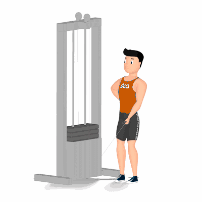

Elevação Lateral no Cross Over

Exercício para fortalecimento e hipertrofia dos músculos da região dos ombros, com enfoque na lateral dos deltoides.
Ficha Técnica
Tipo: Musculação
Grupo Muscular: Ombro
Aparelho: Nenhum
Músculos: Nenhum
Como realizar
- Roldana no nível mais baixo do aparelho;
- Posicione um dos braços à frente, segure a alça do aparelho;
- Cotovelos ligeiramente flexionados, utilize a outa mão para auxiliar no equilíbrio apoiando-a na cintura ou no aparelho;
- O tronco deve ficar reto, puxe a alça para cima lateralmente abduzindo o ombro até o braço ficar paralelo ao solo;
- Desça até a posição inicial de forma controlada;
- Repita os movimentos, conforme o número de repetições orientado pelo professor.
 RC STORE
RC STORE